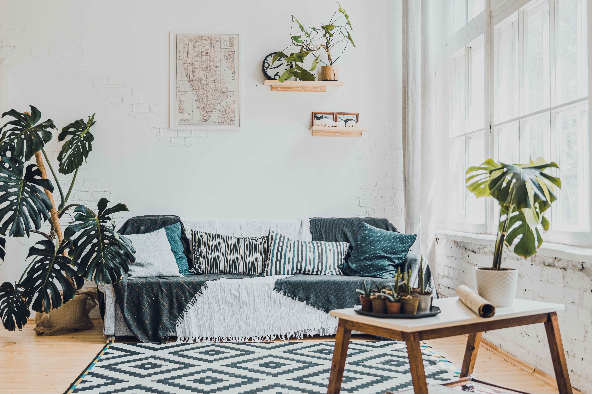

In This Article
- Introduction
- Start With an Inspection After Winter
- Clean Selectively and Protect Garden Life
- Review Soil, Compost, and Irrigation
- Plan New Planting Without Getting Ahead of the Weather
- Organize the Work During the First Weeks
- Maintain Results Over Time
- Frequently Asked Questions
- Conclusion
Introduction
Preparing the garden for spring is easier when you begin with an inspection instead of rushing into planting, pruning, or fertilizing. Winter can leave broken branches, damaged pots, compacted soil, drainage problems, loose supports, and plants that appear dormant even though their roots are still alive.
Work gradually and adapt each decision to your climate, the plant species, and the condition of the garden. Spring lasts several weeks, so not every task has to be completed on the first warm weekend.
Start With an Inspection After Winter
Walk through the garden and look for broken branches, frost damage, plants lifted by freezing and thawing, waterlogged areas, damaged containers, and structures that need repair.
Do not assume a plant is dead too quickly. Some species break dormancy late and can look dry while the root system remains alive. Check the normal behavior of the plant before removing it.
Inspect large trees from the ground. Hanging branches, large cracks, or damage close to buildings and paths may require professional assessment. Avoid risky work at height with household ladders.
Check fences, stakes, ties, and supports for climbing plants. Winter wind and moisture can loosen fixings, and repairing them before active growth begins helps protect new shoots.
Observe where water accumulates. If soil remains saturated, wait before planting or digging and investigate drainage first.
Review your tools before the first work session. Clean them, sharpen appropriate blades, and inspect handles and mechanisms so later tasks can be completed more safely and efficiently.
Write down priorities instead of trying to finish the entire garden at once. Many spring tasks have a better moment later in the season.
Clean Selectively and Protect Garden Life
Remove trash, fallen branches, and clearly diseased material, but do not automatically remove every dry stem or leaf if it is still protecting shoots or providing habitat.
In climates where beneficial insects overwinter in stems and leaf litter, delaying some cleanup until temperatures remain consistently mild can be useful. Adapt this approach to local conditions.
Clear paths and hard surfaces to reduce slipping hazards. Healthy debris can be moved to compost or suitable mulched areas when appropriate.

Remove young weeds before they produce seed. Damp soil can make roots easier to pull, but avoid walking repeatedly on saturated planting beds.
Cut back dry perennials when appropriate and when new shoots are easy to distinguish. Work carefully so fresh growth is not damaged.
Inspect mulch. Redistribute material that shifted over winter, but keep it away from trunks and crowns. Excessively thick mulch can hold too much moisture and hide problems.
Healthy plant waste can often be composted, but diseased plants or material containing troublesome seed should be handled according to the specific issue.
Review Soil, Compost, and Irrigation
Wait until soil is no longer saturated before digging. A simple test is to squeeze a handful: if it forms a sticky mass that does not crumble, the soil may still be too wet to work.
Apply mature compost where it is useful and appropriate for the soil. Do not fertilize automatically. A soil test can help determine whether nutrients or pH correction are actually needed.
Inspect irrigation before warm weather increases demand. Look for clogged emitters, broken tubing, leaks, and misaligned sprinklers.
Adjust irrigation schedules to spring conditions. Rainfall and cooler temperatures often mean the garden needs less water than in midsummer.
Containers can dry differently from garden beds. Check drainage and refresh potting mix when necessary without assuming every pot needs a complete change each year.

If you are planning new planting, group species with similar water needs. This makes irrigation simpler and reduces waste for the rest of the season.
Mulch applied after the soil warms sufficiently can help conserve moisture and suppress weeds. The best timing depends on the climate and crop.
Plan New Planting Without Getting Ahead of the Weather
A few warm days do not mean frost risk is over. Check typical frost dates and the needs of each plant before moving tender species outdoors.
Cold-tolerant plants can often be installed earlier than warm-season crops. Local nurseries and extension services may provide planting calendars suited to your region.
If seedlings were started indoors, acclimate them gradually before transplanting. Sudden exposure to full sun, wind, and cooler nights can damage tender growth.
Spread purchases across the season instead of buying everything that happens to be flowering in one week. Include plants that provide summer, autumn, and winter interest as well.
Respect mature size and recommended spacing. A newly planted bed may look open at first, but filling every gap can create overcrowding later.
Check plant labels and avoid invasive species in your region. Plants adapted to local climate and site conditions usually require less maintenance.
Finish with a simple schedule for sowing, transplanting, pruning, watering, and inspection. A realistic plan distributes the workload and makes the season easier to manage.
Organize the Work During the First Weeks
Divide the garden into zones and complete one area before moving to the next. This creates visible progress and prevents tools and debris from being scattered everywhere.

During the first week, prioritize inspection, safety, and repair. In later weeks, move on to selective cleanup, soil work, and new planting according to weather.
Do not schedule one general pruning session for every plant. Make a species list and check the correct timing. Some plants are pruned after flowering and others need very little pruning.
Leave time for observation. Early growth reveals which plants survived and where genuine gaps remain.
Check the forecast before transplanting. A single cold night can damage seedlings that were protected indoors.
Add new maintenance tasks gradually. A sustainable garden is one whose summer care fits your schedule, not just one that looks full in early spring.
At the end of the first month, take photographs and update your list. This provides a clear record for comparing growth and identifying problems.
Maintain Results Over Time
After the main tasks are complete, review the garden during the following weeks. Real results appear through new growth, weather changes, and everyday use.
Record what worked and what took more time than expected. This makes the next season easier to prepare for.
Avoid adding tasks just because you have time available. Sustainable maintenance means doing what is necessary consistently rather than intervening constantly.
If conditions change, such as persistent wet soil, a leaking irrigation line, or a plant becoming unstable, return to diagnosis before applying another solution.
Photographs from the same viewpoints are a simple way to compare seasonal progress.
Frequently Asked Questions
When should I start preparing the garden for spring?
Begin when local conditions allow you to work without compacting saturated soil and while keeping frost risk in mind.
Should I remove all dry leaves and stems?
Not necessarily. Selective cleanup can preserve useful wildlife habitat and protect emerging growth until weather becomes milder.
Is spring fertilization always necessary?
No. It depends on the soil and plants, and testing can help avoid unnecessary applications.
When can seedlings go outdoors?
After gradual acclimation and when temperatures are suitable for the species.
How should irrigation be adjusted in spring?
Check rainfall and soil moisture and use less water than midsummer conditions require when appropriate.
Use a Simple Spring Checklist
Divide your list into inspection, safety, cleanup, soil, irrigation, planting, and follow-up. This makes it easier to complete urgent work first and postpone tasks that depend on warmer weather.
Reuse the checklist next year and update it with notes from the current season.
Use a Simple Spring Checklist
Divide your list into inspection, safety, cleanup, soil, irrigation, planting, and follow-up. This makes it easier to complete urgent work first and postpone tasks that depend on warmer weather.
Reuse the checklist next year and update it with notes from the current season.
Use a Simple Spring Checklist
Divide your list into inspection, safety, cleanup, soil, irrigation, planting, and follow-up. This makes it easier to complete urgent work first and postpone tasks that depend on warmer weather.
Reuse the checklist next year and update it with notes from the current season.
Use a Simple Spring Checklist
Divide your list into inspection, safety, cleanup, soil, irrigation, planting, and follow-up. This makes it easier to complete urgent work first and postpone tasks that depend on warmer weather.
Reuse the checklist next year and update it with notes from the current season.
Use a Simple Spring Checklist
Divide your list into inspection, safety, cleanup, soil, irrigation, planting, and follow-up. This makes it easier to complete urgent work first and postpone tasks that depend on warmer weather.
Reuse the checklist next year and update it with notes from the current season.
Use a Simple Spring Checklist
Divide your list into inspection, safety, cleanup, soil, irrigation, planting, and follow-up. This makes it easier to complete urgent work first and postpone tasks that depend on warmer weather.
Reuse the checklist next year and update it with notes from the current season.
Use a Simple Spring Checklist
Divide your list into inspection, safety, cleanup, soil, irrigation, planting, and follow-up. This makes it easier to complete urgent work first and postpone tasks that depend on warmer weather.
Reuse the checklist next year and update it with notes from the current season.
Use a Simple Spring Checklist
Divide your list into inspection, safety, cleanup, soil, irrigation, planting, and follow-up. This makes it easier to complete urgent work first and postpone tasks that depend on warmer weather.
Reuse the checklist next year and update it with notes from the current season.
Use a Simple Spring Checklist
Divide your list into inspection, safety, cleanup, soil, irrigation, planting, and follow-up. This makes it easier to complete urgent work first and postpone tasks that depend on warmer weather.
Reuse the checklist next year and update it with notes from the current season.
Use a Simple Spring Checklist
Divide your list into inspection, safety, cleanup, soil, irrigation, planting, and follow-up. This makes it easier to complete urgent work first and postpone tasks that depend on warmer weather.
Reuse the checklist next year and update it with notes from the current season.
Use a Simple Spring Checklist
Divide your list into inspection, safety, cleanup, soil, irrigation, planting, and follow-up. This makes it easier to complete urgent work first and postpone tasks that depend on warmer weather.
Reuse the checklist next year and update it with notes from the current season.
Use a Simple Spring Checklist
Divide your list into inspection, safety, cleanup, soil, irrigation, planting, and follow-up. This makes it easier to complete urgent work first and postpone tasks that depend on warmer weather.
Reuse the checklist next year and update it with notes from the current season.
Use a Simple Spring Checklist
Divide your list into inspection, safety, cleanup, soil, irrigation, planting, and follow-up. This makes it easier to complete urgent work first and postpone tasks that depend on warmer weather.
Reuse the checklist next year and update it with notes from the current season.
Use a Simple Spring Checklist
Divide your list into inspection, safety, cleanup, soil, irrigation, planting, and follow-up. This makes it easier to complete urgent work first and postpone tasks that depend on warmer weather.
Reuse the checklist next year and update it with notes from the current season.
Use a Simple Spring Checklist
Divide your list into inspection, safety, cleanup, soil, irrigation, planting, and follow-up. This makes it easier to complete urgent work first and postpone tasks that depend on warmer weather.
Reuse the checklist next year and update it with notes from the current season.
Conclusion
Preparing the garden for spring is much easier when the work is divided into clear priorities. Begin with inspection and safety, then move through selective cleanup, soil, irrigation, and planting according to the climate.
You do not need to complete every change in one day. Working in stages helps you confirm results and avoid unnecessary time and expense.